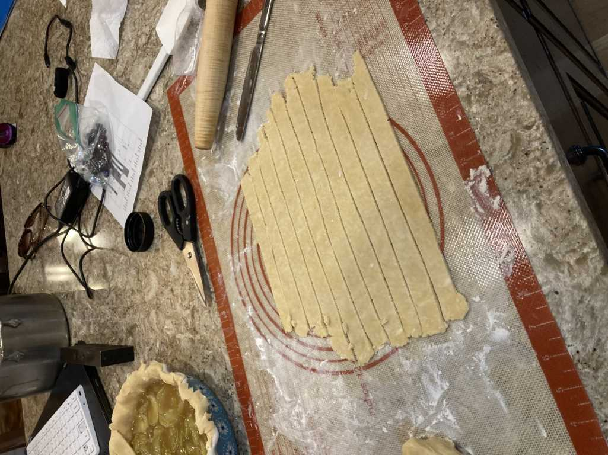

Pie 2: Green Tomato
2023-07-07Filling recipe from The Spruce Eats.
Crust recipe from AllRecipes.com.
Taste:
Suggested pairings: Thai curry, maple syrup
One of the greatest gifts God has given to humanity is the ability to create and to delight in what we have created. Baking, woodworking, painting, writing: all of these activities leave the world changed. Where once unorganized ingredients were, now there is, for example, Pie. In chopping, mixing, sautéing, and baking, miniature sub-creations are taking place. At any point, one can halt and marvel at the changes they have wrought.
Such tangible manifestations of the human ability to create are invaluable. Today, I (KB) was asked to relate my experience in Ecuador during an interview. I spent most of my time abroad working in a bakery with men who were recovering from substance abuse. At first, I had been frustrated by this unanticipated and boring task. Through reflection, however, my appreciation for the organization I interned with and its methods has increased. For people who lived in an altered reality or struggled to find a purpose, baking is a concrete symbol of their impact on the world. They have created something good which might then bless others.
This latest pie helped me appreciate reality and clearly perceive my own impact on it. We began by visiting a farmer’s market. It had some very appealing melons and flowers, as well as vegetables like onions, beefsteak tomatoes, and zucchini. I was excited by the zucchini but curious about the green tomatoes hidden amongst the red. I asked Ben, “What do people even do with green tomatoes?” “Well,” he responded, “they make green tomato pie.” I had never heard of green tomato pies and thought the idea was rather silly, especially if green tomatoes tasted anything like their red cousins.
Turns out, the endlessly knowledgeable Benjamin Scott was right. Green tomato pie is considered a Southern dessert, one which puts my Southern heritage to shame, as I had never had one before. We left the market with seven green tomatoes and a yellow watermelon (another new fruit to try). We also acquired some pork lard from Ben’s grandmother, which apparently is a crucial part of any good green tomato pie crust.
The dish was rather simple to prepare, aided by our decision to leave the skins of the tomatoes on because we are not babies. We did cook the tomatoes in the sugar syrup for a bit in a pot, which I thought was unusual.
The truly challenging part of this pie was the lattice crust.
For this first attempt at such a structure, we decided to leave plenty of space between the strips of crust. If we want to make a more comprehensive crust in the future, we will have to make MUCH more dough and arrange each strip with delicacy and precision. This time, we just had fun. :) We wove the layers together like a well-oiled pie-making machine. Then I brushed it with egg wash and Ben sprinkled it with raw sugar.

As the pie baked, its aroma vaguely resembled that of an apple pie (especially since we added the characteristic spices of that illustrious dish). I only hope it tastes half as good as one. Alas, we had partaken of a gifted pie for dinner, so we exercised enormous amounts of self-control to resist the alluring scent and appearance of our golden pie. After cooling, Ben covered it with aluminum foil, and the pie was all tucked in for its single night of rest before we devoured it.
The next day. My feelings about this pie are mixed. The crust is immaculate; it is flaky, golden, the perfect thickness, and a savory compliment to the sweet filling. The filling, unfortunately, does itself no favors in resembling apple pie. Not only is it the hue of Dreamwork’s notorious ogre, but the very thought of it being, in reality, just tomatoes is a challenging mental hurdle to overcome. Nevertheless, it was sweet, had a fine texture, and according to Ben could substitute for apple pie in a pinch. I thought the pie lacked the applesauce texture that arises from baking apples, therefore the comparison really does not help me in appreciating this pie. Nevertheless, partakers of this green tomato pie will leave satisfied and smiling about this seasonal sweet treat. Next time we might try to let the pie be itself by adding some vinegar, as many other recipes do.